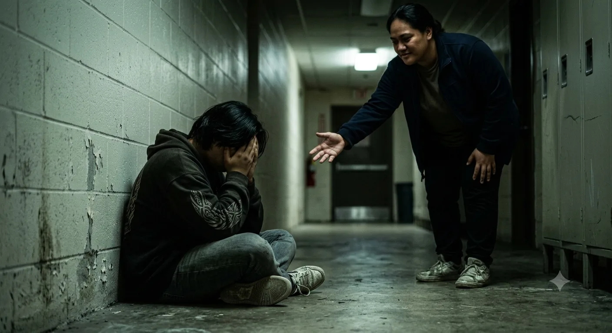
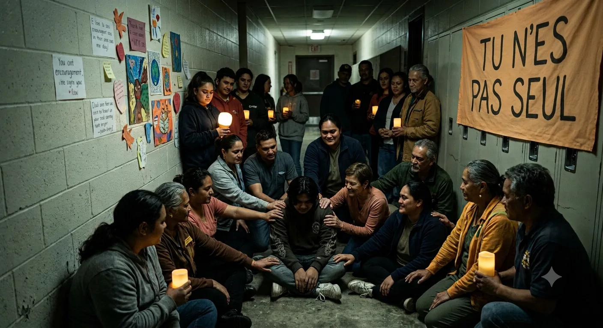

Protège ton Mana.
Tu n'es pas seul face à l'Ice.
L'addiction n'est pas un manque de volonté, c'est un piège neurochimique violent. Tu n'as pas à traverser cette épreuve dans l'isolement. Tu peux t'en sortir, et nous sommes là pour t'accompagner.
Un dérèglement chimique artificiel qui épuise ton cerveau. Ce n'est pas ta faute si ton corps réclame la substance.
Tout échange médical est strictement protégé par la loi. Aucun jugement, aucun signalement aux autorités.
Où que tu sois (Tahiti, Raromatai, Tuamotu, Marquises, Australes), des équipes bienveillantes sont prêtes à t'aider.
Comprends le cycle dans lequel tu es pris
Mettre des mots clairs sur ce que tu ressens te permet de te libérer de la culpabilité pour engager ta guérison.
1. La Fausse Énergie
Tu as l'impression d'être invincible, de ne plus ressentir la fatigue ni la faim. En réalité, la molécule brûle tes réserves vitales en accéléré.
Étape 1 : Surcharge artificielle2. Le Crash & L'Angoisse
Quand l'effet retombe, ton cerveau est à sec. Tu te sens vidé, méfiant envers tout le monde, anxieux et obsédé par l'envie de reprendre.
Étape 2 : Le manque neurobiologique3. La Rupture avec tes Proches
Tu t'éloignes de ta famille, tu perds tes repères et l'argent part en fumée. C'est le moment d'ouvrir la porte pour te faire aider.
Étape 3 : L'engrenage relationnelRepérer les signes avant qu'il ne soit trop tard
Voici les indices concrets qui prouvent que le corps et l'esprit tirent la sonnette d'alarme.
Tu restes éveillé 2 à 3 jours non-stop, puis tu t'écroules de fatigue pendant des journées entières.
Tu as l'impression constante qu'on t'espionne, qu'on parle dans ton dos ou que tes proches te veulent du mal.
Tu t'agites sur des détails, tu démontes des objets sans raison et tu t'énerves très vite.
Accepter la main tendue change tout
L'Ice te fait croire que tu dois te cacher. Regarde comment s'ouvre le chemin dès que tu acceptes du soutien.
Quand tu es au plus bas
L'épuisement, la honte et la sensation d'être coincé dans un couloir sans issue. Tu penses que personne ne peut comprendre ton calvaire.
« La drogue te persuade que rester seul te protège, alors qu'elle t'enferme. »

2. Le déclicAccepte qu'on t'aide
Attraper la main tendue n'est pas une faiblesse : c'est l'acte de courage le plus fort que tu puisses poser pour reprendre le contrôle de ta vie.
Le premier pas : Accepter de ne plus porter ce fardeau tout seul.

3. La force collectiveTu n'es pas seul
Entouré par ton feti'i, des soignants et la communauté, tu retrouves ton Mana, ton énergie et ta vraie place au Fenua.
Ta guérison est une victoire pour nous tous.
Les 4 étapes pour t'en sortir
La rémission se fait pas à pas, avec un suivi médical bienveillant et le soutien de notre communauté.
1. Ton Premier Contact
Un simple appel ou un message anonyme. Tu n'as pas besoin de donner ton identité pour être écouté.
2. Bilan de Santé Doux
Un point complet avec un médecin addictologue pour comprendre ton corps et ton sommeil, sans pression.
3. Accompagnement Médical
Des traitements pour calmer l'angoisse du manque et un espace pour vider ton sac avec un psychologue.
4. Reconnexion au Fenua
Retrouver ta famille, le va'a, les projets et la fierté de vivre libre dans ton île.
Les lieux et numéros où tu peux être aidé au Fenua
Centre de Soin des Addictions (CPSA Mamao)
Gratuit & ConfidentielPapeete — Médecins addictologues et psychologues spécialisés dans le sevrage de la méthamphétamine (Ice). Tu peux venir sans crainte.
Urgences CHPF Taaone
24h/24 & 7j/7Pirae — En cas de malaise aigu, panique sévère ou détresse vitale.
Écoute & Soutien SOS Addictions
Écoute AnonymePour poser tes questions ou parler si tu es inquiet pour un proche dans les îles.
Paroles de Résilience
Demander de l'aide n'est pas une faiblesse. Voici ce que d'autres, ici au Fenua, ont accepté de partager.
« J'avais honte, je pensais que ma famille allait me rejeter si j'en parlais. Commencer par écrire ici sans donner mon nom m'a enlevé un poids énorme. Ça a été le début de ma liberté. »
— Un jeune de Tahiti, 24 ans (anonyme)
« Je croyais pouvoir gérer l'Ice tout seul. En fait, la drogue me mentait. Accepter d'appeler Mamao n'a pas été une faiblesse, c'est ce qui m'a sauvé. »
— Un père de famille, Raromatai (anonyme)
« Quand mon frère a plongé, on ne savait plus quoi faire. Cet espace m'a permis de comprendre sans juger et de trouver les bons numéros. »
— Une sœur engagée, Moorea (anonyme)
Partages anonymisés avec accord, pour rappeler que personne n'est seul face à cette épreuve.
Confidentialité & déontologie
Fenua Ora ne fait ni marketing ni communication publique autour des personnes qui s'expriment ici : aucun témoignage n'est jamais rendu public sans accord explicite. Toute proposition à visée commerciale ou promotionnelle, même gratuite, n'est pas prise en compte par nos services.
Tu peux parler anonymement
Tu échanges d'abord en toute discrétion avec notre assistant sécurisé — jamais un proche, jamais rendu public. Si tu en ressens le besoin, nous t'orientons vers un professionnel de santé du Fenua.
Besoin de vider ton sac, de partager ce que tu vis ou de poser ce que tu as sur le cœur ? Ici, pas de formulaire à remplir, pas de nom, pas d'identité demandée. Écris simplement ton message ci-dessous :